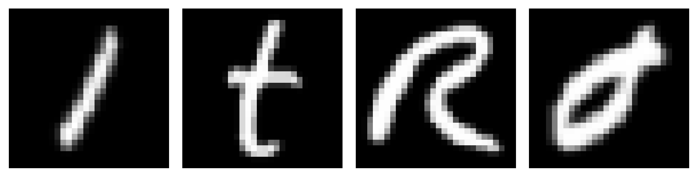

Leveraging broad inductive biases to optimize specialized downstream tasks.
Training models from scratch demands massive compute resources and vast datasets. Transfer learning bypasses this by treating pre-trained parameter topologies as foundational intelligence assets.

We declare a Domain $\mathcal{D} = \{\mathcal{X}, P(X)\}$ and a Task $\mathcal{T} = \{\mathcal{Y}, f(x)\}$. Transfer learning moves predictive systems from a source environment to target variations:
Where either domain dimensions or label boundaries diverge:
Deep architectures stratify representations across successive processing blocks:
Choosing an alignment method depends heavily on target dataset capacity and domain shifts:
Base parameters stay frozen $\nabla_\theta=0$ only the new linear classification head updates parameters during optimization passes.
Keeps early feature paths locked while opening deeper contextual layers near the model output to downstream updates.
Exposes all parameters across the network using micro-learning rates $\eta_{\text{ft}} \ll \eta_{\text{base}}$ to preserve structure.
When parameter scale scales past billions, Full Fine-Tuning becomes computationally prohibitive.
Keeps original weights 100% frozen. Instead, injects small, manageable trainable parameter paths or prompt tokens, reducing memory overhead up to 90%.
Decomposes weight updates $\Delta W$ into low-rank matrices $A$ and $B$:
# 1. Initialize the model architecture with no pre-trained weights
model = resnet18(weights=None)
# 2. Define the exact path where you saved the .pth file
weights_path = "/path/to/resnet18-f37072fd.pth"
# 3. Load the state dictionary manually
state_dict = torch.load(weights_path, map_location="cpu")
model.load_state_dict(state_dict)
# Replace final classification layer
model.fc = nn.Linear(model.fc.in_features, num_classes)When extending a pre-trained backbone with a randomly initialized classification head, parameter tracking encounters an extreme optimization mismatch.
Applies mathematical constraints or weight penalties to physically restrict parameter deviation from the base state.
Enforces temporal isolation. Warms up the random head under strict backbone freeze constraints before opening global parameter paths.
Unchecked optimization on narrow target sets can overwrite a model's foundational parameters, destroying its general capabilities. We prevent this by minimizing weight deviations via regularization:
During the opening training epochs, the pre-trained feature extractor parameters are strictly locked ($\nabla_{\theta_{\text{base}}} = 0$).
Once the loss curve stabilizes, all layers are unfrozen to allow joint feature optimization.
You do not need complex explicit cost functions to protect representations. Staged training enforces structural integrity through Temporal Isolation:
By limiting early exposure, the baseline network never encounters chaotic out-of-distribution gradients, achieving the same objective as physical weight-deviation penalties.
# === STAGE 1: Warm-up Head Only (e.g., Epochs 1-5) ===
model = models.resnet18(weights=models.ResNet18_Weights.DEFAULT)
model.fc = nn.Linear(model.fc.in_features, num_classes)
for param in model.parameters():
param.requires_grad = False # Lock backbone
for param in model.fc.parameters():
param.requires_grad = True
optimizer = optim.Adam(model.fc.parameters(), lr=1e-3)
# === STAGE 2: Global Unfreeze with Differential Learning Rates ===
for param in model.layer4.parameters():
param.requires_grad = True
for param in model.fc.parameters():
param.requires_grad = True
optimizer = optim.Adam([
{'params': model.layer4.parameters(), 'lr': 1e-5}, # Gentle Backbone Tuning
{'params': model.fc.parameters(), 'lr': 1e-4} # Refined Head Tuning
])When entering Stage 2, always scale the backbone learning rate down significantly ($\eta_{\text{base}} \approx \frac{1}{100} \eta_{\text{head}}$). This prevents high-variance gradients from overwriting the pre-trained features.
Since fine-tuning often converges in very few epochs, implement Early Stopping. Monitor validation loss and halt training the moment performance plateaus to prevent the model from overfitting to your target dataset.
Downstream structural deployment paths map cleanly along two primary dimensional axes:
| Dataset vs Domain | Similar Domain | Different Domain |
|---|---|---|
| Small Target Data | Linear Classifier Head (Freeze Backbone) |
Expose Deep Layers Only (High Overfit Risk) |
| Large Target Data | Tune Top Blocks (Low Learning Rate) |
Full Backbone Fine-Tune (Or PEFT/LoRA Layers) |
Inherits general lower representations to minimize pipeline compute costs and dataset size mandates.
Leverages differential learning rates and weight parameter constraints to eliminate catastrophic forgetting hazards.
Deploys PEFT methodologies to manipulate massive models without destabilizing foundational latent spaces.
Thank you for exploring optimization transfer boundaries.